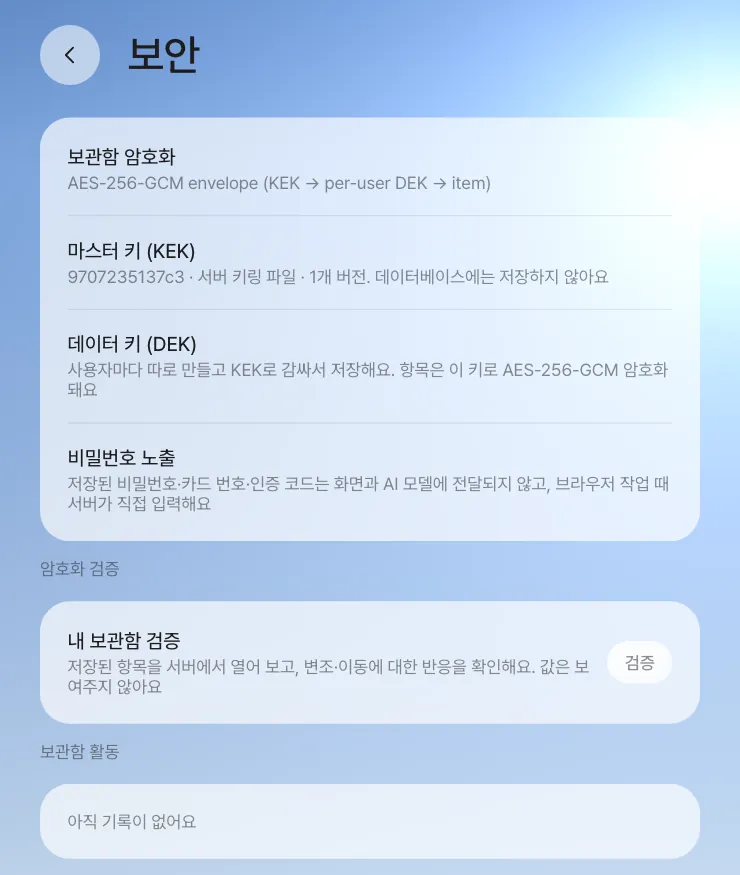

사내에 Process GPT Lite를 설치해 운영하는 담당자를 위한 장입니다. 팀원과 역할, 관리자, 키가 있는 곳, 데모 로그인 끄기, 보관함 암호화와 키 교체, 백업과 업그레이드, 업그레이드 전 회귀 테스트, 개인정보를 지키는 기본값을 차례로 봅니다.
앞 장에서 본 구성 요소를 사내에서 실제로 운영할 때 챙길 것을 모았습니다. 설치 자체는 1장에서 했으니, 여기서는 설치 뒤의 일 — 사람과 권한, 비밀 값, 백업과 업그레이드 — 을 다룹니다.
팀원과 역할#
「설정 › 팀·역할」에서 두 가지를 정합니다.
| 항목 | 내용 |
|---|---|
| 팀원 | 이름과 이메일로 추가합니다. 아직 한 번도 로그인하지 않은 사람도 계정이 먼저 만들어져, 첫 방문 전부터 일을 받을 수 있습니다. 로그인한 사람은 팀 목록을 처음 열 때 스스로 팀에 들어갑니다 |
| 역할 담당 | 프로세스 단계는 그 역할을 맡은 팀원에게 가고, 그 사람의 홈에 알림이 갑니다. 비워 두면 일을 시작한 사람(예약을 건 사람)이 맡습니다. 정하는 순서는 프로세스별 지정 → 전체 기본 → 시작한 사람입니다(18장) |
스킬 쪽에는 에이전트 담당자가 따로 있습니다. 공유된 스킬의 개선 제안은 스킬을 만든 사람과 그 스킬을 가진 에이전트의 담당자만 반영할 수 있습니다(10장).
팀원·역할 변경 권한
현재 버전은 팀원·역할 변경 권한을 따로 나누지 않으므로, 로그인한 사람은 누구나 팀원을 더하거나 빼고 역할을 바꿀 수 있습니다. 운영에서는 사내 계정만 로그인할 수 있게 두고(아래 “데모 로그인 끄기”), 팀·역할 변경은 맡을 담당자를 정해 두세요.
관리자#
관리자는 Process GPT의 사용자 표(users.is_admin)로 정합니다. 설치 번들은 설치할 때 입력한 첫 관리자 이메일(ADMIN_EMAIL)을 관리자로 만듭니다.
| 관리자만 할 수 있는 것 | 장 |
|---|---|
| 프로세스 마이닝 추천 보기, 정식 등록, 보류 | 19장 |
| 모든 프로세스 인스턴스와 그 산출물 보기 (보통은 참여자·담당자만) | 18장 |
| 남의 작업실 열기 (보통은 단계 담당자·참여자·대화 주인만) | 23장 |
키는 어디에 있나#
개발 설치에서 중계 서버는 설정을 환경 변수 → server/.env → Process GPT 폴더의 .env 순서로 읽습니다. 비밀 값을 Lite 쪽에 다시 복사하지 않고 Process GPT의 것을 그대로 씁니다. 설치 번들은 install/.env 하나에 모읍니다. 이 파일은 처음 설치할 때 권한 0600으로 만들어지고 비밀 값이 자동으로 채워지며, 업그레이드해도 그대로 남습니다.
| 무엇 | 개발 설치 | 설치 번들 (install/.env) |
|---|---|---|
| LLM 주소·키·모델 | PRO_LLM_BASE_URL, PRO_LLM_API_KEY, PRO_LLM_MODEL, PRO_LLM_FAST_MODEL (없으면 Process GPT의 키) |
LLM_BASE_URL, LLM_API_KEY, LLM_MODEL, LLM_FAST_MODEL |
| DB·로그인 서버 | Process GPT .env의 POSTGRES_PASSWORD, ANON_KEY, SERVICE_ROLE_KEY |
POSTGRES_PASSWORD, JWT_SECRET, ANON_KEY, SERVICE_ROLE_KEY (자동 생성) |
| 보관함 마스터 키(KEK) | server/.vault-keyring.json (0600) 또는 PRO_VAULT_KEK |
VAULT_KEK (자동 생성) |
| 예약 콜백 비밀 | PRO_CRON_SECRET |
CRON_SECRET (자동 생성) |
| Google 로그인·메일 연결 | GOOGLE_CLIENT_ID, GOOGLE_CLIENT_SECRET |
같은 이름 |
| 회의 받아쓰기 | PRO_TRANSCRIBE_API_KEY |
TRANSCRIBE_API_KEY |
사용자 각자의 비밀(커넥터 토큰, Google 메일 연결 토큰, 사이트 로그인, 카드)은 설정 파일이 아니라 그 사람의 보관함에 암호문으로 들어갑니다.
개발 설정을 그대로 공유 서버에 쓰지 마세요
PRO_CRON_SECRET은 비워 두면 코드에 적힌 기본값을 씁니다. 여러 사람이 쓰는 서버라면 직접 정한 값으로 바꾸세요. 설치 번들은 설치할 때 무작위 값을 만듭니다.
데모 로그인 끄기#
코드 000000으로 아무 이메일이나 들어오는 데모 로그인은 체험용입니다.
| 설치 | 기본 | 끄는 법 |
|---|---|---|
| 개발 설치 | 켜짐 | server/.env(또는 환경 변수)에 PRO_DEMO_LOGIN=0, 서버 재시작 |
| 설치 번들 | 꺼짐 (DEMO_LOGIN=0) |
그대로 두세요. 1은 닫힌 PC에서 시연할 때만 |
끄면 로그인 코드가 메일로 갑니다. 설치 번들은 SMTP를 설정하지 않으면 번들 메일함(http://localhost:18025, 그 PC에서만 열림)으로 보냅니다. 지금 상태는 /api/config의 demoLogin으로 확인합니다.
보관함 암호화와 키 교체#
보관함은 봉투 암호화입니다. 서버에만 있는 마스터 키(KEK)가 사용자마다 하나씩인 데이터 키(DEK)를 감싸고, DEK가 각 항목을 AES-256-GCM으로 암호화합니다. 데이터베이스에는 암호문과 감싼 DEK만 있으므로, DB만 빼 가서는 열 수 없습니다. 비밀번호·카드 번호·인증 코드는 화면에도, AI 모델에도 가지 않고 브라우저 작업 때 서버가 직접 입력합니다(6장).

키 작업은 서버 폴더에서 node scripts/vault-admin.mjs <명령>으로 합니다. 이 스크립트는 비밀 값이나 키를 화면에 찍지 않습니다.
| 명령 | 하는 일 |
|---|---|
status |
키링, KEK별 DEK 수, 종류별 항목 수 |
verify |
모든 항목을 실제로 열어 확인 |
rotate-kek |
새 KEK를 만들어 현재 키로 정하고 모든 DEK를 다시 감쌈 |
rewrap |
은퇴한 KEK로 감싸인 DEK를 현재 KEK로 다시 감쌈 (환경 변수로 KEK를 바꾼 뒤) |
prune-kek |
어떤 DEK도 쓰지 않는 은퇴 KEK를 키링에서 지움 |
rotate-dek <사용자 id \| --all> |
새 DEK를 만들고 항목을 다시 암호화 |
rotate-kek·prune-kek 뒤에는 서버를 다시 시작합니다. KEK를 환경 변수(PRO_VAULT_KEK)로 주는 경우 rotate-kek는 거절됩니다. 새 키를 PRO_VAULT_KEK에, 옛 키를 PRO_VAULT_KEK_RETIRED에 넣고 재시작한 뒤 rewrap을 돌립니다.
백업과 업그레이드#
Lite에는 백업 기능이 따로 들어 있지 않습니다. 아래는 권장 절차입니다. 사용이 적은 시간에 다섯 가지를 같은 시점에 함께 복사해 두세요. 특히 KEK가 들어 있는 .env를 잃으면 보관함은 복구할 수 없습니다.
| 무엇 | 어디 |
|---|---|
| 데이터베이스 (대화·카드·프로세스·팀·보관함 암호문) | db 서비스. 예: docker compose exec -T db pg_dump -U postgres postgres > lite.sql |
| 파일 저장소 (문서·그림 카드의 원본) | storage-data 볼륨 |
| 공유 폴더(git)·ArtCraft 웹 빌드 | server-data 볼륨 (/data/folders, /data/craft) |
| 에이전트 작업 폴더·스킬 | LITE_DATA_DIR/deepagents/ (workspace, skills) |
| 비밀 값 | install/.env (개발 설치는 server/.vault-keyring.json과 두 .env) |
업그레이드는 ./install.sh --upgrade 한 줄입니다. 소스를 받고(git pull), 이미지를 빌드하거나 받고, DB 마이그레이션을 돌린 뒤 다시 시작합니다. 비밀 값은 유지됩니다. 권장 순서는 백업 → 업그레이드 → 회귀 테스트입니다.
업그레이드 전 회귀 테스트#
저장소의 e2e/에는 지금까지의 기능을 다시 확인하는 Playwright 테스트가 세 단계로 있습니다.
| 단계 | 확인하는 것 | 모델 호출 | 시간 | 명령 |
|---|---|---|---|---|
| smoke | 기동·로그인, 모든 화면이 오류 없이 뜸, 보안 울타리(남의 작업실 403, 터미널 티켓, 보관함 비밀 없음, 패널 행 보안) | 없음 | 1분 안팎 | npm run test:smoke |
| feature | 고정 데이터로 기능 확인(공유 폴더·스킬 공유·패널 앱·예약·팀·프로세스·편집기·라이브 편집) | 없음 | 수 분 | npm run test:feature |
| agent | 시연 영상의 사용자 여정을 실제 모델로 끝까지 | 있음 | 30~90분 | npm run test:agent |
cd e2e && npm install && npx playwright install chromium
PGPT_URL=http://localhost:18080 MAILPIT_URL=http://localhost:18025 npm run test:smoke
- 테스트는 전용 시험 계정만 쓰고, 만든 데이터는 끝나면 지웁니다. 중간에 끊겼으면
npm run cleanup. - 결과는
reports/<단계>/html(HTML 보고서)과junit.xml(CI 연결용)에 남습니다. - 설치 번들에는 ArtCraft·판단 서버 등이 없어 해당 시험은 실패가 아니라 이유를 단 건너뜀으로 끝납니다.
업그레이드 때마다 smoke와 feature를, 큰 릴리스 전에는 agent까지 돌리는 것을 권합니다.
개인정보를 지키는 기본값#
| 영역 | 기본 동작 |
|---|---|
| 보관함·브라우저 | 비밀 값은 모델에 가지 않음. 브라우저 에이전트가 보는 페이지 요약에서 비밀 칸 값을 지우고, 모델에 보내는 화면 사진에서 그 칸을 가림 |
| 패널 앱 | 항목마다 민감도(공개·사내·개인·민감). 개인 항목은 본인·작성자·폴더 주인만, 민감 항목은 본인·폴더 주인만 봄. 민감한 숫자의 팀 합계는 세 명 이상 모였을 때만. 만든 사람이 낮추면 확인과 기록이 남음(12장) |
| 팀 공유 | 받는 사람만 열 수 있게 서버가 확인하고, 받은 사람은 자기 사본을 고침(14장) |
| 회의 | 받아쓰기·기록에 동의한 사람의 말만 받아씀. 회의록에 “동의하지 않은 분”을 적음. 방마다 도우미를 끌 수 있음. 서버 전체에서 도우미를 끄려면 설치 번들은 MEETING_AGENT=0, 개발 설치는 PRO_MEETING_AGENT=0. 회의 기능 전체를 끄려면 개발 설치의 PRO_MEETINGS=0(16장) |
| 작업실 | 담당자·참여자·대화 주인·관리자만. 터미널은 일회용 티켓으로 열고, 서버의 비밀 환경 변수를 넘기지 않음 |
| 바깥 공개 | 개발 서버를 터널로 열면 터널 주소에는 접근 암호(server/.public-access)가 걸림. 설치 번들을 인터넷에 열 때는 앞에 HTTPS 리버스 프록시를 둠 |
알려진 제약
- 현재 버전에서는 문서·그림 카드의 파일이 추측하기 어려운 주소의 공개 저장소에 올라가, 주소를 아는 사람은 로그인 없이 열 수 있습니다. 외부에 여는 운영에서는 이 점을 고려하세요.
- 브라우저 에이전트 세션은 서버 메모리에 있어, 서버를 다시 시작하면 진행 중이던 작업은 “중단됨”이 됩니다. 서버 재시작은 브라우저 작업이 없을 때 하세요.
- 무엇이 모델에 가는지 확인하려면
PRO_LLM_TRACE=<파일>로 서버를 띄웁니다(기본은 꺼짐). 중계 서버가 직접 부르는 모델 요청의 글(그림 제외)이 그 파일에 쌓이고, deepagents가 부르는 요청은 들어가지 않습니다.
이것으로 7부를 마칩니다. 다음 장에서는 지금까지 배운 것을 새 고객 요청 한 건에 처음부터 끝까지 써 보는 종합 과제를 합니다(26장).
확인 문제
- 박서연이 퇴사해 계정을 막고 싶습니다. 팀에서 빼는 것 말고 무엇을 확인해야 할까요?
- 서버를 새 PC로 옮기면서 데이터베이스만 백업해 왔습니다. 무엇이 안 될까요?
- 업그레이드 뒤 smoke는 통과했는데 feature에서 ArtCraft 시험이 모두 “건너뜀”입니다. 실패인가요?
답
- 팀에서 빼면 역할 담당에서도 빠지므로, 그 사람이 맡던 역할의 새 담당자를 정합니다(비워 두면 일을 시작한 사람이 맡습니다). 로그인 자체를 막으려면 데모 로그인이 꺼져 있는지 확인하고, 로그인 서버(Supabase Auth)에서 계정을 막습니다.
- KEK가 없으면 보관함 항목(로그인·카드·커넥터 토큰)을 열 수 없습니다. 파일 저장소가 없으면 카드의 문서·그림이 열리지 않고, 공유 폴더 볼륨이 없으면 폴더의 이력과 변형이 사라집니다.
- 아닙니다. 설치 번들에는 ArtCraft 앱이 없어 그 시험은 이유를 단 건너뜀으로 끝납니다.
/api/config의craft에 앱이 있다고 나오는데도 건너뛴다면 그때 원인을 봅니다.